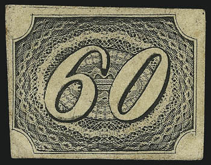
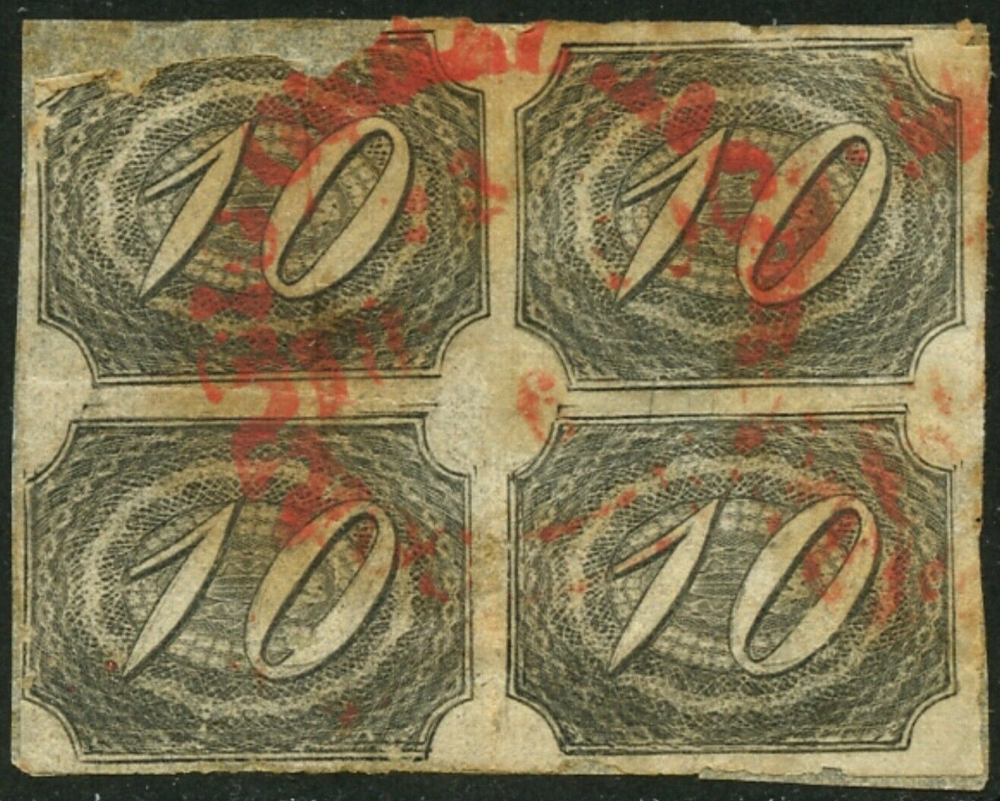
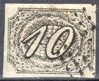
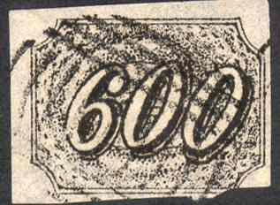
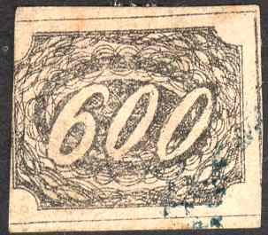
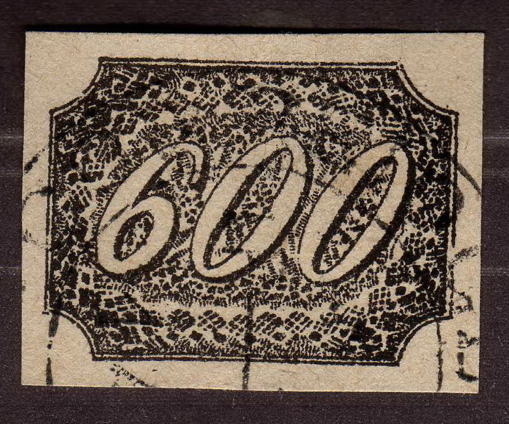
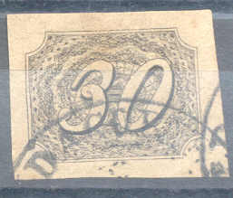
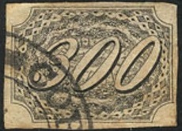
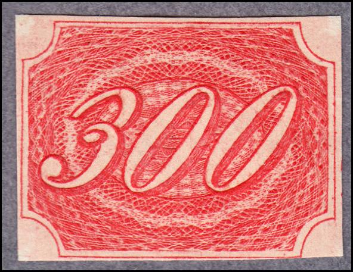

{kind=link}



Return To Catalogue - Brazil 1843 - Brazil 1850-1865 - Brazil 1866-1890 - Brazil 1891-1920 - Fiscal stamps, part 1 - Fiscal stamps, part 2 - Miscellaneous
Note: on my website many of the
pictures can not be seen! They are of course present in the
catalogue;
contact me if you want to purchase it.

10 r black 30 r black 60 r black 90 r black 180 r black 300 r black 600 r black
Value of the stamps |
|||
vc = very common c = common * = not so common ** = uncommon |
*** = very uncommon R = rare RR = very rare RRR = extremely rare |
||
| Value | Unused | Used | Remarks |
| 10 r | R | *** | |
| 30 r | R | R | |
| 60 r | R | *** | |
| 90 r | RR | RR | |
| 180 r | RRR | RRR | |
| 300 r | RRR | RRR | |
| 600 r | RRR | RRR | |

With green cancel "DIAMANTINA"?

Block of four 10 r stamps.




(Reduced size)
Note that the numbers are different from the genuine stamps in the above forgeries. Also note the typical 'Spiro' cancels.
The forger Fournier offers the three values 180 r, 300 r and 600 r in his 1914 pricelist for 3 Swiss Francs. He sold them as first choice forgeries. I have no pictures of those available right now. He also sold the whole serie (7 values) as second choice forgeries for 2 Swiss Francs, possibly he sold the above shown forgeries.
Other forgeries:


(Forgeries of the 30 r and 90 r)


Two different forgeries of the 600 r value


Forgeries of the 30 r and 300 r; made by the same forger? There
is no loop in the center of the '3's.


A set apparently made by the same forger. Note the straight white
line in the center of the 60 r forgery (first forgery listed in
Album Weeds).



Another set apparently made by the same forger


And another set of forgeries

And two forgeries of the 300 r and 600 r value made by the same
forger



Rather deceptive forgery of the 600 r value (Oneglia?).

Forgery apparently based on an illustration in a Schaubek Album
(or is it the other way around?).

Engraved forgery in the wrong color red of the 300 r stamp.
Forgeries, also in bogus colors. All forgeries have dots in the
numbers. Other colors exist.
For issues of Brazil from 1850-1865 click here.
{kind=link}
{kind=link}
{kind=link}
{kind=link}
{kind=link}